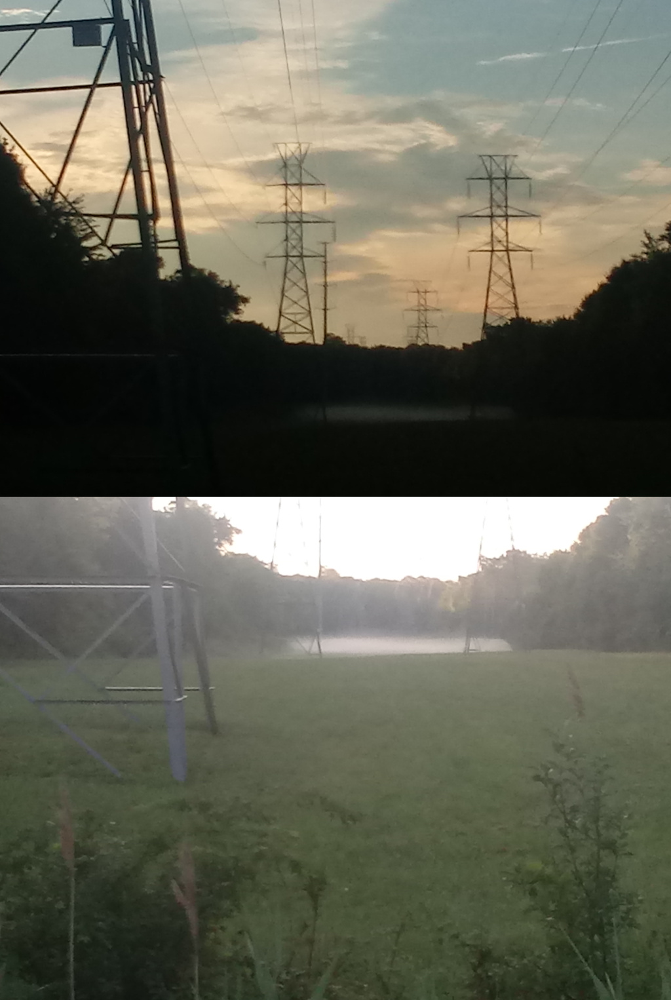

The Sunlit Dew
Sure, racing my bicycle is nice late in the day,
but at the end I have to use a flashlight to find my way.
Riding in the morning, the sun becomes so blinding halfway through,
that I have to switch to sunglasses to continue enjoying the view.
Mornings have a whole different feel,
empty streets and backwards sun make them all seem unreal.
That fresh fragrance full of chilled morning dew,
now sunlit, creating a strange and mystical view.
This morning I saw a gigantic deer waking up in a grassy patch,
and a hawk probably waiting around for her babies to hatch.
Dear Reader, how about you?
what do you love more, evening sunsets or the sunlit dew?
